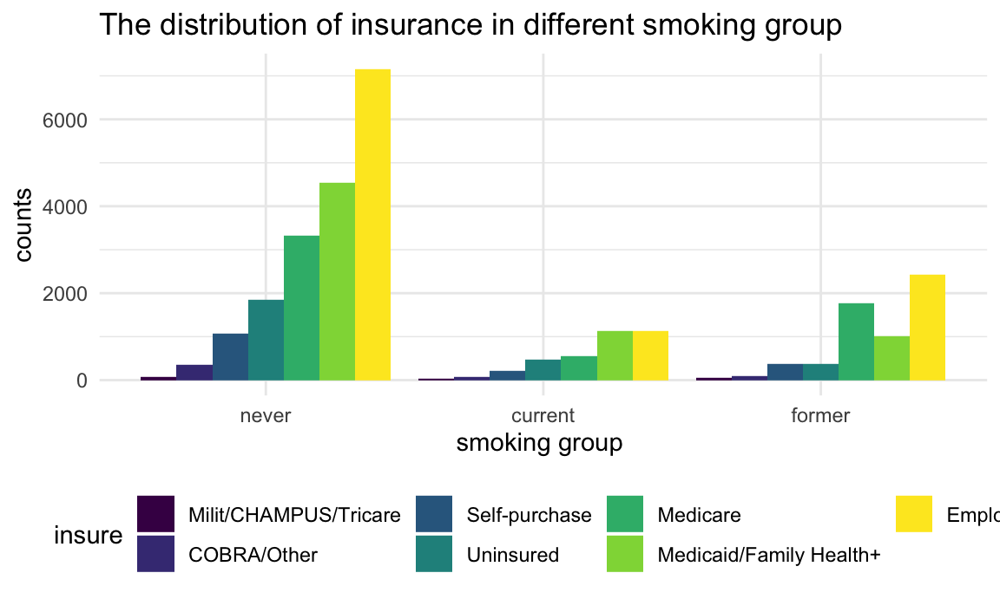
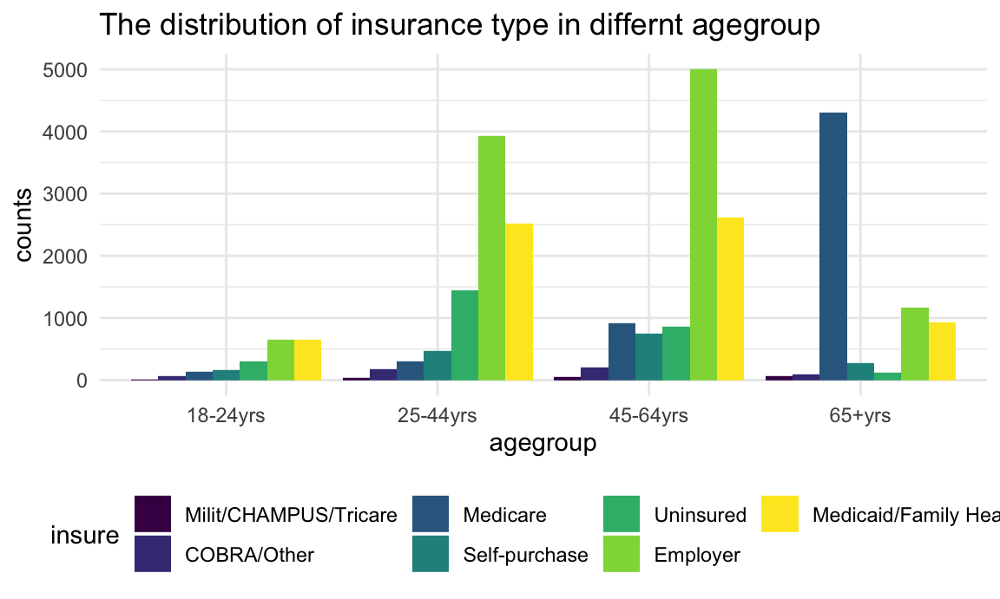
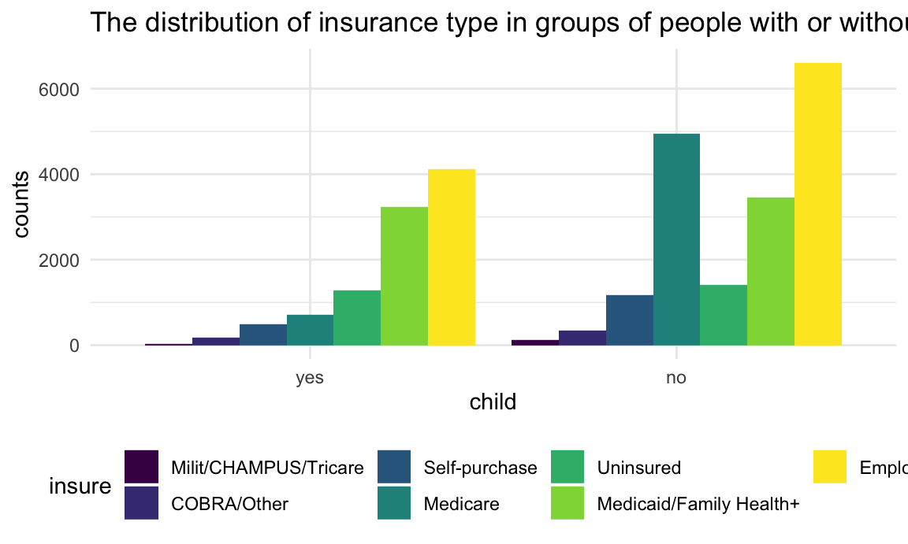
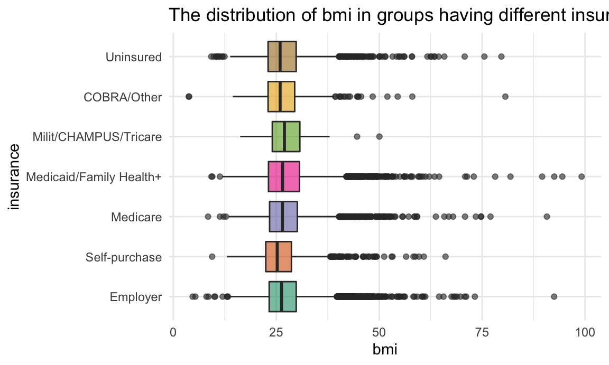
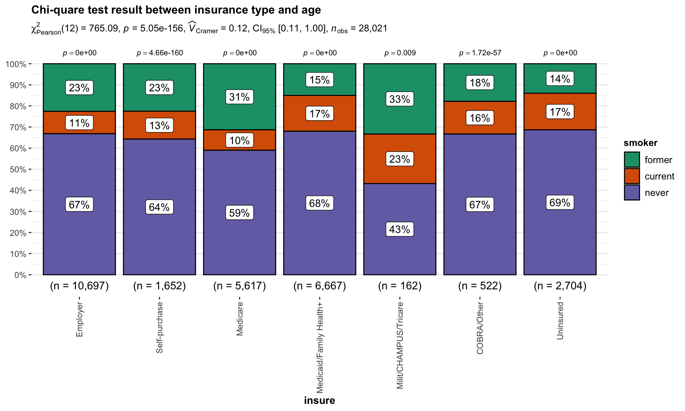
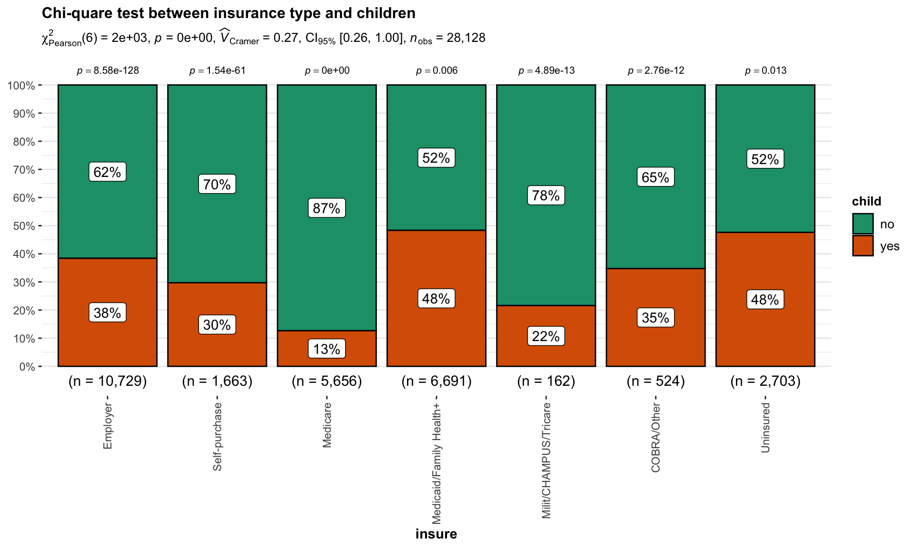
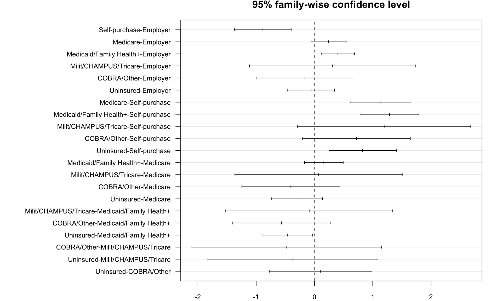

ataset_basic = read_csv("data/dataset_basic.csv")
dataset_basic = read_csv("data/dataset_basic.csv") %>%
mutate(
child = factor(child,levels = c(1,2),labels = c("yes","no")),
sex = factor(sex,labels = c("male","female")),
insure = factor(insure,levels = c(1,2,3,4,5,6,7),labels = c("Employer","Self-purchase","Medicare", "Medicaid/Family Health+", "Milit/CHAMPUS/Tricare", "COBRA/Other", "Uninsured")),
smoker = factor(smoker,levels = c(1,2,3),labels = c("never","current","former")),
agegroup = factor(agegroup,ordered = TRUE,labels = c("18-24yrs","25-44yrs", "45-64yrs", "65+yrs"))
) %>%
select(insure,agegroup,smoker,bmi,child,sex)insurance and target variablesIn this step, we want to explore more about the relationship between insurance and key variables, including smoking, age, have children or not and BMI. We start by plotting distribution graphs to see the pattern between each groups. And then we conduct statistical tests to evaluate the association and similarity between them.
analyse_smoke_insurancetype =
dataset_basic %>%
drop_na(smoker,insure) %>%
group_by(smoker,insure) %>%
summarize(n = n()) %>%
mutate(insure = fct_reorder(insure,n))
analyse_smoke_insurancetype %>%
ggplot(aes(x =smoker , y = n, fill = insure)) +
geom_bar(stat = "identity",position = "dodge") +
labs(
x = 'smoking group ',
y = 'counts',
title = 'The distribution of insurance in different smoking group ')
analyse_agegroup_insurancetype =
dataset_basic %>%
drop_na(agegroup,insure) %>%
group_by(agegroup,insure) %>%
summarize(n = n()) %>%
mutate(insure = fct_reorder(insure,n))
analyse_agegroup_insurancetype %>%
ggplot(aes(x = agegroup, y = n, fill = insure )) +
geom_bar(stat = "identity",position = "dodge") +
labs(
x = 'agegroup',
y = 'counts',
title = 'The distribution of insurance type in differnt agegroup') For person younger than 65 years old, people tend to get insurance as age increase. Specifically, for those age in the range of 25-64 years old, high proportion of them get employer insurance since they are in working age.
For person older than 65 years old, most of them get Medicare since Medicare is only provided for people above 65 years old.
analyse_children_insurancetype =
dataset_basic %>%
drop_na(child,insure) %>%
group_by(child,insure) %>%
summarize(n = n())%>%
mutate(insure = fct_reorder(insure,n))
analyse_children_insurancetype %>%
ggplot(aes(x = child, y = n, fill = insure )) +
geom_bar(stat = "identity",position = "dodge") +
labs(
x = 'child',
y = 'counts',
title = 'The distribution of insurance type in groups of people with or without children')
We found that for those without children, a larger proportion of them get Medicare comparing to those with children.
analyse_bmi_insurancetype =
dataset_basic %>%
drop_na(bmi,insure)
analyse_bmi_insurancetype %>%
ggplot(aes(x = insure, y = bmi,fill = insure)) +
geom_boxplot(alpha=0.6) +
theme(legend.position="none") +
scale_fill_brewer(palette="Dark2")+
labs(
x = 'insurance',
y = 'bmi',
title = 'The distribution of bmi in groups having different insurance type') +
coord_flip()
We did not observe significant difference between each group.
\(H_0\) : insurance type and smoking are independent, there is no relationship between the two categorical variables.
\(H_1\) : insurance type and smoking are dependent, there is a relationship between the two categorical variables.
Test result:
dat =
dataset_basic %>%
drop_na(smoker,insure) We reject \(H_0\) and then conclude that insurance type and smoking are dependent.
\(H_0\) : insurance type and age are independent, there is no relationship between the two categorical variables.
\(H_1\) : insurance type and age are dependent, there is a relationship between the two categorical variables.
Test result:
dat =
dataset_basic %>%
drop_na(agegroup,insure) 
We reject \(H_0\) and then conclude that insurance type and age are dependent.
\(H_0\) : insurance type and have children or not are independent, there is no relationship between the two categorical variables.
\(H_1\) : insurance type and have children or not are dependent, there is a relationship between the two categorical variables.
Test result:
#test_data_smoke_insurancetype = analyse_smoke_insurancetype %>%
# pivot_wider(
# names_from = "insure",
# values_from = "n")
#test_data_smoke_insurancetype %>% knitr::kable()
#chisq.test(test_data_smoke_insurancetype[-1])
dat =
dataset_basic %>%
drop_na(child,insure)
We reject \(H_0\) and then conclude that insurance type and children are dependent.
\(H_0\) : The mean of BMI in each insurance type groups are the same
\(H_1\) : At least two means of BMI in all insurance type groups are different
Test result:
| term | df | sumsq | meansq | statistic | p.value |
|---|---|---|---|---|---|
| insure | 6 | 2435.492 | 405.9154 | 10.88312 | 0 |
| Residuals | 26917 | 1003942.322 | 37.2977 | NA | NA |

According to the ANOVA test, we reject \(H_0\) and conclude At least two means of BMI in all insurance type groups are different. Detailed information of the difference in each group can be seen on the above image.